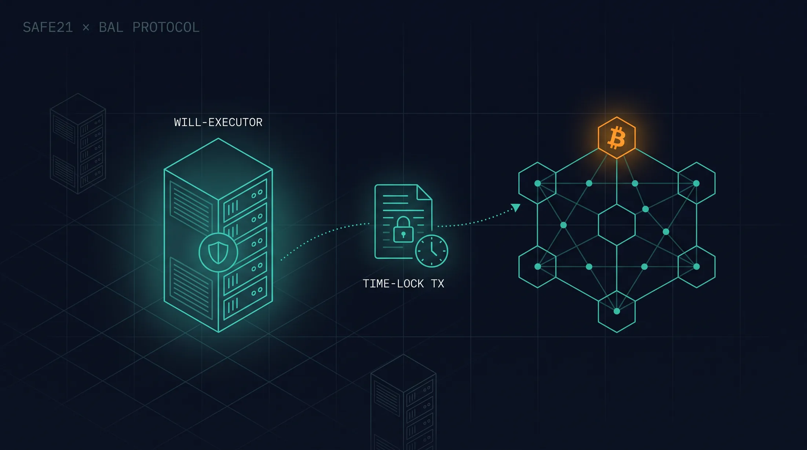

C'è una domanda che prima o poi ogni bitcoiner si fa: "E se domani non ci fossi più, i miei bitcoin che fine fanno?"
La risposta onesta, per la maggior parte delle persone, è scomoda: spariscono. Non perché qualcuno li rubi, ma perché nessuno sa come recuperarli. Le chiavi le conosci solo tu — è proprio questo il bello della self-custody, ed è anche il suo lato più delicato.
Da tempo, in SAFE21, la soluzione che consigliamo a questa domanda si chiama BAL — Bitcoin After Life: un protocollo aperto e un plugin gratuito per Electrum che permette di preparare un'eredità in bitcoin senza notaio, senza avvocato e senza consegnare le chiavi a nessuno.
Oggi vogliamo raccontarti perché abbiamo deciso di fare un passo in più: non solo consigliarlo, ma contribuire direttamente al protocollo con un nostro server Will-Executor, e aiutare a portarlo su Umbrel OS perché chiunque possa fare lo stesso.
Un ripasso veloce: come funziona BAL
Se non hai mai sentito parlare di Bitcoin After Life, ecco l'idea in un minuto.
Con il plugin BAL installato su Electrum, tu:
- Scegli i tuoi eredi e come dividere i fondi tra loro;
- Scegli una data di consegna nel futuro (per esempio tra qualche anno);
- Il plugin costruisce una transazione con time-lock: una normale transazione Bitcoin, già firmata da te, che però la rete rifiuta di accettare prima della data che hai stabilito.
Finché sei in vita, rinnovi periodicamente il testamento spostando la data più avanti. Se un giorno smetti di farlo — perché non ci sei più — la data arriva, la transazione diventa valida e i bitcoin raggiungono i tuoi eredi. Automaticamente.
Le tue chiavi non lasciano mai il tuo dispositivo. Nessuno può eseguire la transazione in anticipo, nessuno può modificarla, nessuno può rubarla: la matematica di Bitcoin lo impedisce.
Ma c'è un tassello che rende possibile tutto questo. Qualcuno, quel giorno nel futuro, deve ricordarsi di trasmettere la transazione alla rete. Ed è qui che entrano in scena i Will-Executor.
I Will-Executor: i postini pazienti di Bitcoin
Un Will-Executor è un server indipendente che fa un lavoro semplicissimo e prezioso: custodisce la tua transazione firmata e la trasmette alla rete Bitcoin nel giorno giusto. Niente di più.
Vale la pena ripeterlo, perché è il cuore della sicurezza del protocollo:
Cosa può e non può fare un Will-Executor
- Un Will-Executor non può rubare i tuoi fondi: riceve solo una transazione già firmata, non le tue chiavi.
- Non può modificarla: cambiarne anche una virgola la renderebbe invalida.
- Non può trasmetterla in anticipo: i nodi Bitcoin la rifiutano fino alla data del time-lock.
L'unica cosa che un Will-Executor può fare di sbagliato è... sparire. Spegnersi, andare offline, non esserci più quando serve. E il protocollo risolve anche questo, nel modo più bitcoin possibile: la ridondanza. Il plugin non si affida a un solo server — crea una copia della transazione per ogni Will-Executor che scegli. Ne basta uno solo ancora attivo alla data di consegna perché l'eredità arrivi a destinazione.
Capito questo, la conclusione arriva da sola: più Will-Executor indipendenti esistono nel mondo, più il protocollo è robusto. Ogni singolo server in più rende più sicura l'eredità di tutti.
Perché SAFE21 ha acceso il suo server
Ed eccoci al punto. Da oggi SAFE21 gestisce il proprio Will-Executor, raggiungibile su we.safe21.io (anche via Tor, per chi tiene alla privacy).
Lo abbiamo fatto per tre ragioni, e vogliamo essere trasparenti su tutte.
1. Crediamo nel progetto — e nella sua decentralizzazione
BAL è tutto ciò che secondo noi uno strumento Bitcoin dovrebbe essere: open source, verificabile riga per riga, non-custodial per costruzione, senza un'azienda al centro che possa fallire, farsi comprare o cambiare le regole.
Ma un protocollo decentralizzato è decentralizzato solo se qualcuno, concretamente, accende i server. Non basta fare il tifo dal divano. Siamo consapevoli che anche un solo server in più può fare la differenza — per la ridondanza di un'eredità, per la resilienza dell'intera rete, per il segnale che manda: questo progetto ha una comunità che ci mette le macchine, non solo le parole.
2. Il rapporto rischio/beneficio è altamente favorevole
Guardiamola anche dal lato pratico, perché un Will-Executor non è beneficenza: è un piccolo investimento di medio-lungo periodo.
Ogni transazione di eredità custodita da un Will-Executor include un output che paga una commissione al server stesso — ma solo quando, alla data stabilita, quel server trasmette davvero la transazione e questa viene confermata sulla blockchain. L'incentivo è scritto direttamente on-chain: niente abbonamenti, niente fatture, niente fiducia richiesta. Fai il tuo lavoro, vieni pagato. Non lo fai, non incassi nulla.
Dal lato dei costi? Un server modesto, un po' di spazio disco, una connessione. Il software è gratuito e open source. Il rischio operativo è minimo — il server non custodisce fondi né chiavi, quindi non c'è niente da rubare — mentre il potenziale ritorno cresce nel tempo, man mano che più persone preparano la propria eredità con BAL e le transazioni in custodia si accumulano. Non è un modo per arricchirsi domattina: è un seme piantato oggi che matura negli anni, esattamente il tipo di orizzonte temporale che ogni bitcoiner conosce bene.
Rischio quasi nullo, costi contenuti, incentivo on-chain, beneficio per l'intera rete: per noi il conto è stato facile.
3. Volevamo renderlo facile per tutti: il Will-Executor su Umbrel OS
C'è una terza cosa che abbiamo fatto, e forse è quella di cui siamo più orgogliosi: abbiamo contribuito a creare una versione del Will-Executor per Umbrel OS.
Se non lo conosci, Umbrel è il sistema operativo che ha reso famoso il "nodo Bitcoin in salotto": un piccolo computer a casa tua, un app store, e installi servizi Bitcoin con un clic — senza terminale, senza righe di comando, senza essere un sistemista.
Ora, tra quelle app, c'è anche il Will-Executor di BAL. Questo significa che chiunque abbia già un nodo Umbrel può diventare Will-Executor in pochi minuti: installi l'app, imposti l'indirizzo Bitcoin su cui ricevere le commissioni, scegli la tua commissione minima, e il tuo server entra a far parte della rete. Il tuo nodo, che già custodisce la tua sovranità, inizia anche a custodire — senza alcun rischio — le eredità di altre persone. E a farsi pagare per farlo.
Abbassare la barriera d'ingresso era il modo migliore che avevamo per aiutare il protocollo a restare quello che è: decentralizzato, distribuito, di nessuno e di tutti.
E tu, da dove puoi iniziare?
Se sei arrivato fin qui, probabilmente ti stai facendo una delle due domande giuste. O tutte e due.
"Voglio preparare l'eredità dei miei bitcoin." Ottimo istinto. Ti serve Electrum e il plugin BAL: la documentazione ufficiale ti guida passo per passo, dall'installazione alla creazione del primo testamento. Il nostro consiglio di sempre: prova prima su testnet o con un piccolo importo, prendi confidenza, guarda le transazioni che il plugin genera. Poi fai sul serio. E se preferisci essere accompagnato da una persona in carne e ossa, è letteralmente il nostro mestiere: scrivici.
"Voglio diventare Will-Executor anch'io." Bellissima idea — e adesso sai perché. Se hai un nodo Umbrel, sei a pochi clic dal traguardo. Se preferisci un server tradizionale, il codice sorgente e la guida per installarlo sono pubblici, come tutto il resto del progetto. Non serve essere un'azienda: serve un po' di cura, una macchina accesa e la voglia di far parte di qualcosa che funziona senza chiedere permesso a nessuno.
Bitcoin ci ha insegnato che non serve fidarsi: si può verificare. BAL applica lo stesso principio a una delle cose più umane che esistano — prendersi cura di chi resta. Noi abbiamo scelto di esserci, con un server acceso e con il codice. Un server in più. Poi un altro. Poi il tuo. È così che le cose decentralizzate diventano indistruttibili.
Una precisazione tecnica, per onestà
Al momento il Will-Executor si può installare su un nodo Umbrel, ma non ancora in modo automatico dal repository App Store di Umbrel — non è quindi, per ora, un'installazione a un clic dall'interfaccia di Umbrel. Si installa direttamente, non tramite l'App Store. Se non hai dimestichezza con la riga di comando, farsi guidare passo passo da una delle moderne intelligenze artificiali oggi disponibili è un ottimo modo per portarlo a termine senza doversi improvvisare sistemisti.
Link utili:
- Il Will-Executor di SAFE21: we.safe21.io
- Sito ufficiale del protocollo: bitcoin-after.life
- Documentazione del plugin e dei Will-Executor: bitcoin-after.life/docs
SAFE21 non prende mai in custodia i tuoi fondi. Il Will-Executor custodisce esclusivamente transazioni già firmate: non può spendere, modificare o anticipare nulla. Le transazioni Bitcoin sono irreversibili: prova sempre con piccoli importi prima di configurare un'eredità reale.